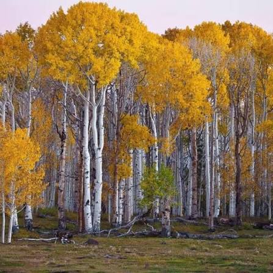
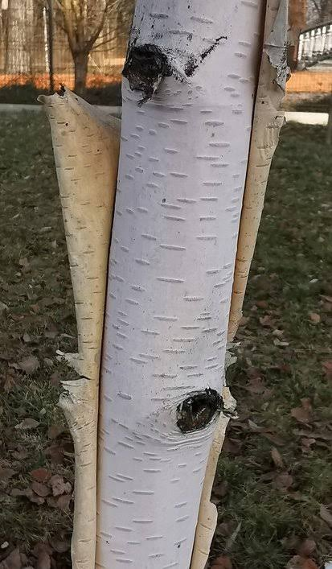
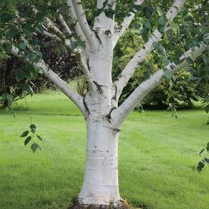

Brzoza papierowa
Brzoza papierowa, znana również jako amerykańska biała brzoza i brzoza kajakowa, to krótkowieczny gatunek brzozy pochodzący z północnej Ameryki Północnej. Nazwa pochodzi od cienkiej warstwy białej kory drzewa, która często złuszcza się z pnia jak warstwy papieru. Drewno jest często używane do produkcji masy drzewnej i drewna opałowego.
Wygląd rośliny
Jest to średniej wielkości drzewo liściaste, zwykle osiągające 20 m wysokości, a wyjątkowo do 40 m, o pniu do 75 cm średnicy. W lasach często rośnie z jednym pniem, ale gdy rośnie w terenie otwartym, może przybrać formę drzewa wielopniowego, często ugałęzionego blisko ziemi.
Popularne odmiany brzozy papierowej
Wszystkie odmiany brzozy papierowej są do siebie bardzo podobne, do najpopularniejszych natomiast należą:
Renci lub Renaissance Reflection – wyróżnia się wyjątkowo jasną korą, która będzie się świetnie prezentowała na tle roślin o ciemnym zabarwieniu kory i liści. Dorasta do około 12 metrów i doskonale radzi sobie z mrozem.
Pochodzenie
Brzoza papierowa została do Europy przywieziona z północnej części Ameryki Północnej jako drzewo ozdobne.
Występowanie brzozy papierowej
Brzoza papierowa w środowisku naturalnym ogranicza się głównie do Kanady i północnych Stanów Zjednoczonych. Występuje w południowo-środkowej Alasce oraz niemal we wszystkich prowincjach i terytoriach Kanady.
Najbardziej wysunięte na południe stanowisko w zachodnich Stanach Zjednoczonych znajduje się w Long Canyon w City of Boulder Open Space i Mountain Parks.
Jaka ziemia jest najlepsza dla brzozy papierowej?
Brzoza papierowa będzie rosła w wielu typach gleby, od stromych skalistych odsłonięć do płaskich piżm w lasach borealnych. Najlepszy wzrost występuje w głębszych, przepuszczalnych glebach, w zależności od lokalizacji.
Jakie warunki uprawy są najlepsze dla brzozy papierowej?
Brzoza papierowa lubi stanowiska o pełnym słońcu i wilgotnej, ale dobrze przepuszczalnej glebie. Drzewa dostosowują się do większości rodzajów gleby, o ile latem jest tam chłodno. Preferuje długie zimy i łagodne lata.
Sadzenie brzozy papierowej
Kiedy sadzić brzozę papierową?
Najlepiej wczesną wiosną, gdy zaczynają rozwijać się pąki liściowe lub jesienią – od października do pierwszych mrozów. Sadzonki rosnące w doniczkach można sadzić przez cały sezon wegetacyjny, od wczesnej wiosny do późnej jesieni.
Gdzie posadzić brzozę papierową?
W słonecznym, lecz odsłoniętym od wiatru miejscu, na lekkiej i przepuszczalnej glebie. Brzoza papierowa doskonale nadaje się do parków i dużych ogrodów.
Jak gęsto sadzić brzozę papierową?
Brzoza papierowa jak każde drzewo potrzebuje odpowiedniego miejsca do rozwoju, jednakże nie ma ona rozbudowanej korony, dlatego też można je sadzić w odstępach 2–3 metrów.
Tempo wzrostu brzozy papierowej
To drzewo rośnie w średnim lub szybkim tempie w zależności od warunków od 30 cm do ponad 60 cm rocznie.
Kwitnienie brzozy papierowej
Kiedy kwitnie brzoza?
Od marca do maja. Kwiatostany mają charakterystyczny, żółtozielony kolor.
Jak długo kwitnie brzoza?
Pojedyncze kwiatostany utrzymują się od kilku do kilkunastu dni, jednak okres kwitnienia całego drzewa trwa dwa miesiące.
Jak pachnie brzoza?
Kwiatostany brzozy nie mają zapachu.
Liście brzozy papierowej
Liście są ciemnozielone i gładkie na górnej powierzchni, dolna powierzchnia jest owłosiona na nerwach. Liść jest zaokrąglony u podstawy i zwęża się do ostro zakończonej końcówki, ma kształt trójkątny do owalnego. Liście mają podwójnie ząbkowany brzeg ze stosunkowo ostrymi zębami.
Owoce brzozy papierowej
Owoce brzozy papierowej to drobne orzeszki opatrzone dwoma błonkowatymi skrzydełkami. Odpadają one wraz z dojrzałymi nasionami, rozsypując się w całości.
Pielęgnacja brzozy papierowej
Kiedy przycinać brzozę?
Brzoza papierowa po ucięciu gałęzi “płacze” – wypływa z nich sok brzozowy, niestety osłabia to roślinę. Dlatego brzozę papierową przycinamy później, już po tak zwanym pędzeniu soków, czyli po wypuszczeniu pierwszych liści.
Jak ciąć brzozę papierową?
Brzozie papierowej przycinamy wszystkie suche i martwe pędy. Można także ciąć żywe gałęzie, by poprawić pokrój. W takim przypadku podcinamy wszystkie gałęzie, które wystają poza obrys pożądanej korony. Pędy ścinamy tuż nad rozgałęzieniem lub tuż nad pąkiem. Warto także przyciąć gałęzie rosnące zbyt nisko lub krzyżujące się.
Podlewanie brzozy
Młode drzewka brzozy papierowej, zwłaszcza posadzone na suchym stanowisku, warto podlewać się przez okres pierwszych 2 do 3 lat od nasadzenia. Pozwoli to na zmniejszenie systemu korzeniowego, który w przypadku suchego podłoża może nadmiernie się rozrosnąć. Starszych drzew nie trzeba podlewać.
Nawożenie brzozy papierowej
Brzozy nie mają większych wymagań odnośnie nawożenia, warto jednak na wiosnę użyć nawozu wieloskładnikowego, który odżywi drzewo.
Przesadzanie brzozy papierowej
Brzozy są drzewami, które cechuje niski szok po przesadzeniu, dlatego możemy przesadzać nawet kilkuletnie drzewa. Najlepiej jednak sadzić brzozę wczesna wiosną lub późną jesienią.
System korzeniowy brzozy papierowej
Brzoza papierowa ma rozbudowany, głęboko sięgający system korzeniowy. Możemy go jednak zredukować, zapewniając odpowiednio wysoką wilgotność podłoża w pierwszych latach wzrostu.
Jakie odmiany brzozy papierowej do ogrodu?
W przydomowej uprawie ogrodowej najlepiej sprawdzają się karłowate odmiany brzozy papierowej, które łatwo formować.

Brzoza papierowa
w formie żywopłota
Brzoza papierowa
jako karzak
Brzoza papierowa
rosnący przy studni